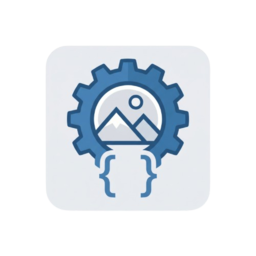

不是密碼保管箱，而是「憑證橋接器」：有權限者用 GUI 把帳密密文寫入，其他自動化程式只透過 CLI 取用——讓每支工具都不必在本地或程式中儲存明文密碼。
前面好幾支自動化工具都需要 JIRA / 客戶系統的帳密。如果每支都自己存一份密碼檔，機密會散落各處。團隊需要一個集中、安全、又能讓自動化程式從命令列取用的機制。
一座橋，兩種模式：GUI（有權限的人登入後，把加密憑證存到共用雲端）與 CLI（其他工具於執行時呼叫取得憑證）。機密永遠不存在各個工具裡。
理想的憑證管理方案（如 Jenkins 憑證管理、HashiCorp Vault 或 GitHub Secrets）都需要一台可長期運作的伺服器，或要求每位成員各自申請帳號——這兩者在當時的部門環境中都不可行。
因此，設計目標是在現有基礎建設上實現最大安全性：以 Windows DPAPI 將本機設定綁定至登入使用者，再透過公司 SharePoint 共用資料夾的讀取權限（企業 AD 管理的 ACL）作為雲端憑證的存取控管機制。這是在沒有額外伺服器或第三方服務的前提下，善用公司現有 AD 網域與 SharePoint 基礎建設的務實工程妥協。
註：本頁僅描述安全設計概念，不公開任何金鑰材料、內部網址或機密路徑。
自動化工具不再各自儲存明文密碼；機密集中且加密，缺乏正確權限或網域的人無法離線解密。